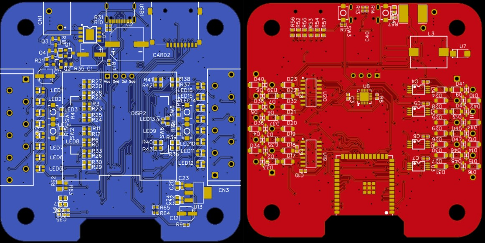
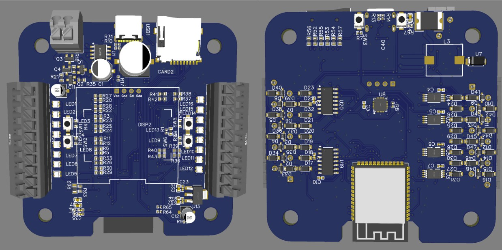
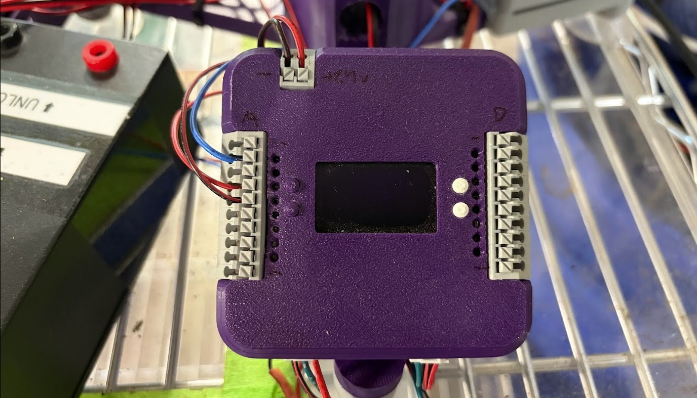
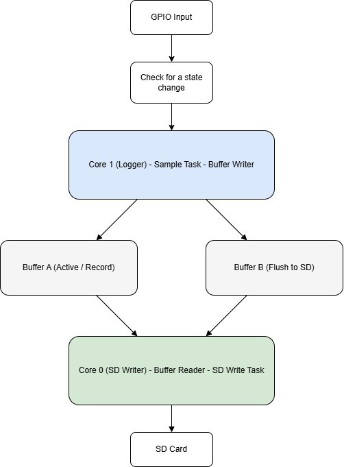
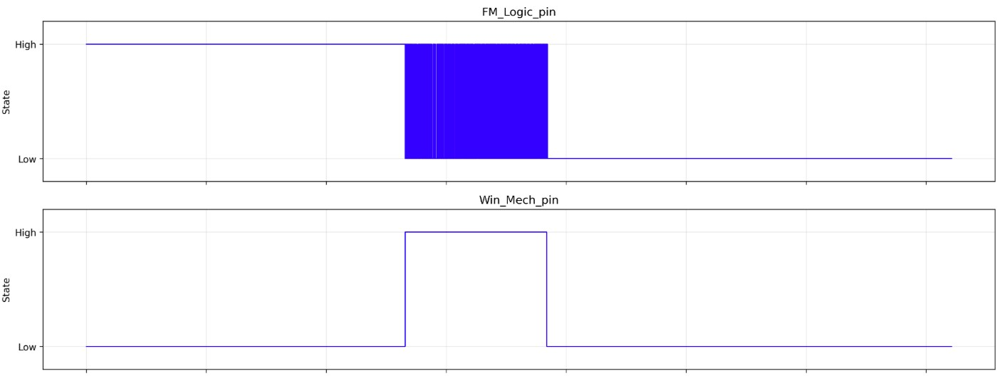

A custom PCB built to log over 10,000 sensor samples per second continuously for days — designed from schematic to enclosure to catch the intermittent hardware failures that no bench tool can reach.
01 — Problem
Mechanism failures at Brewbird were intermittent — occurring once every few hundred cycles, under load, after extended operation. A bench oscilloscope can't stay connected for days. Commercial data loggers lacked the right sensor interfaces, sample rate, or were too bulky to fit inside a running machine.
I needed something custom: small enough to install permanently, fast enough to catch transient events, and reliable enough to run for days without intervention. That meant designing a PCB rather than duct-taping dev boards together.
"The failure only happens after 400 cycles. We need something that can watch the whole thing — not just the first five minutes."
02 — Hardware
The PCB was designed around three constraints: fit the physical envelope of the machine, survive the electrical environment (motor noise, inductive spikes), and run continuously from a small battery or USB supply without thermal issues.
| Component | Part / Value | Function |
|---|---|---|
| MCU | ESP32 (dual-core, 240MHz) | Sensor polling on Core 0, storage writes on Core 1 |
| Storage | MicroSD via SPI | Long-term data logging — days of continuous samples |
| Power | 3.3V LDO regulator | Clean rail for MCU and analog sensors, isolated from motor supply |
| Sensor interface | I2C + SPI headers | Configurable per deployment — swap sensor types without reflowing |
| Filtering | RC low-pass on analog inputs | Reject high-frequency noise from motor PWM switching |
| Indicator | Status LEDs | Log active / error / buffer-full states visible without a computer |
| Connector | JST-PH power input | Compatible with standard LiPo packs for untethered deployment |



03 — Firmware Architecture
Writing directly to an SD card at 10k samples/sec isn't possible — SPI flash writes have variable latency that will cause sample drops. The solution is to decouple the two operations entirely using a lockless ring buffer in SRAM as an intermediary.
config.txt on boot. No reflashing needed to change deployment parameters — swap the config and power cycle.
04 — Impact
The logger directly identified the root cause of several elusive mechanism failures at Brewbird — events that only appeared after hundreds of cycles and disappeared the moment a bench instrument was connected. It's now a standard tool in the hardware debug workflow.
The Python post-processing script decodes binary logs, reconstructs timestamped time series, and plots annotated events — making it easy to share findings with teammates who aren't embedded engineers.
